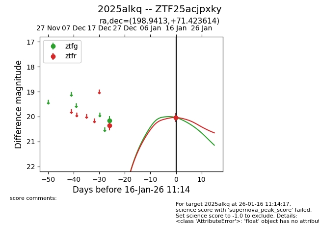
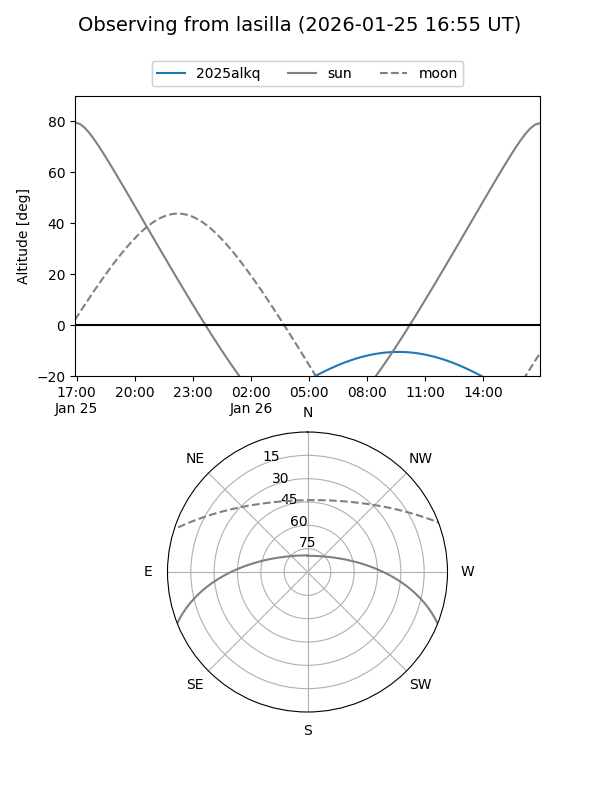
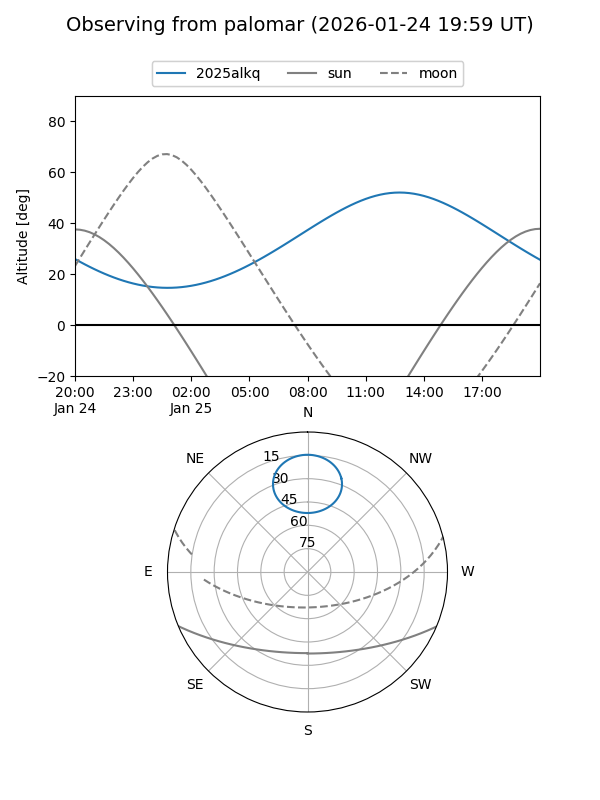
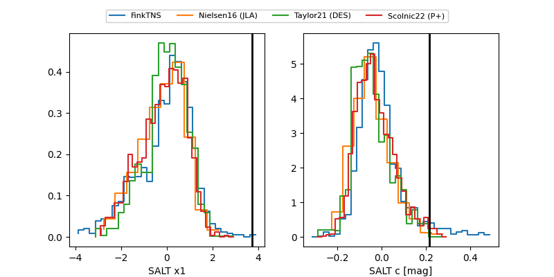

2025alkq
Target 2025alkq at 2026-01-16 11:15
Aliases and brokers:
FINK: link
Lasair: link
ALeRCE: link
TNS: link
YSE: link
alt names
ZTF25acjpxky (ztf,fink_ztf)
2025alkq (tns,yse)
Coordinates:
equatorial (ra, dec) = 198.9413,+71.42361
equatorial (HMS+DMS) = 13:15:45.90,+71:25:25.01
galactic (l, b) = (120.1682,+45.57387)
Flags:
Photometry:
last ztfg=20.16, ztfr=20.04
1 ztfg, 2 ztfr detections
Lightcurve

Visibility


Additional plots
